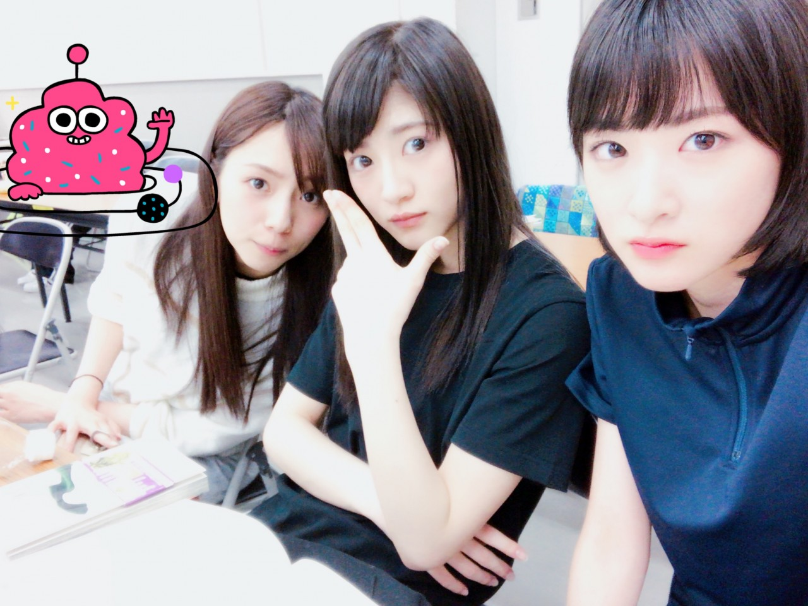

| 2017/04 22 Sat | 生駒里奈 認める認めないじゃない、そこでちょっとでもこいつやるなって思わせる事が出来たらそれでいい。 |

お久しぶりのブログになってしまいましたすみません。
絶賛舞台あさひなぐの稽古中です。
薙刀、初めての防具、殺陣
楽しいですが、
このままいくと、きっと生駒はもっとガリガリやろうになりそうです。笑
毎日汗だらだらで稽古してます。
不安ばかりですが、
きっとこれを乗り越えられたら、
自分も、乃木坂の見方も変わる気がします。
沢山のメンバーが舞台という所で頑張ってくれています。
だから、私も頑張らないと！！
アイドルは
乃木坂は、
ひとつのイメージ、
ひとつのコンセプト、
ひとつのお仕事だけで存在するって事は無いと思います。
アイドルだからこそ、
自由自在に変身できる存在だと思います。
だから、いつもと違うフィールドに入る時、
そっちの世界の方に、そっちの世界のファンの方に
大丈夫なの？アイドルなのに？
と最初思われるのは当然！！
乃木坂のファンの方にも、
いつも通りが1番だよと、何故そっちにいくの？
と思われるのも当然！！
もちろん、頑張ってって言葉をかけてくれる方もいます(*´꒳`*)
だから、そんな皆さんをいつか絶対に
いいじゃんっ！
とか、
悔しいけどよかったよ
と思わせたい！！
それが私の目標(*´꒳`*)
生駒は、基本郷に入れば郷に従うのでね、！
私が思うアイドルの理想像は、
どのお仕事でも
よかったよと言われる事です！！
いこまふぁむの皆さんをびっくり！でもいこまちゃん面白かったよ！
と思わせる事！！
がんばるぞーーー！！！
ひとつのキャラに縛られない！
キャラ変とかない！
てか、生駒は最初からキャラつけてないからね笑
変につけなくてよかたー。。笑
ま、なんて言うか、
変化を楽しみましょうと言う事ですなっ(*´꒳`*)♨︎
その為には私の技術をあげないとな〜
今だにプリンシパルの時のお芝居のイメージだもんなぁ生駒、、
自分自身の行動だが、
まだ幼かったとは言え、
過去の自分よ、、、、
未来の生駒はとっても恥ずかしいです(´；ω；｀)笑
さ、ストレッチします〜！
へばなっ★彡